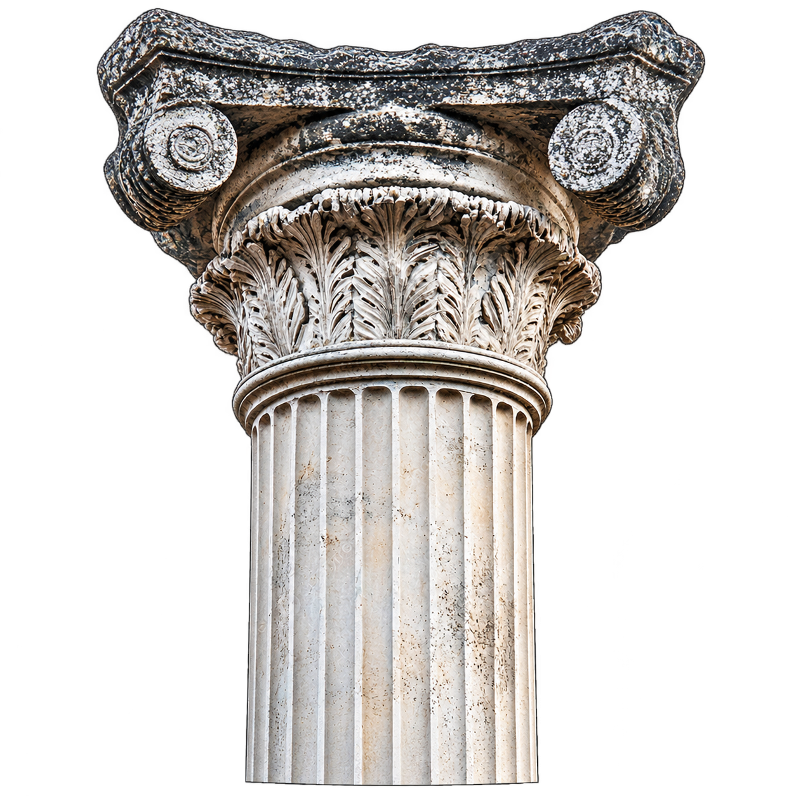
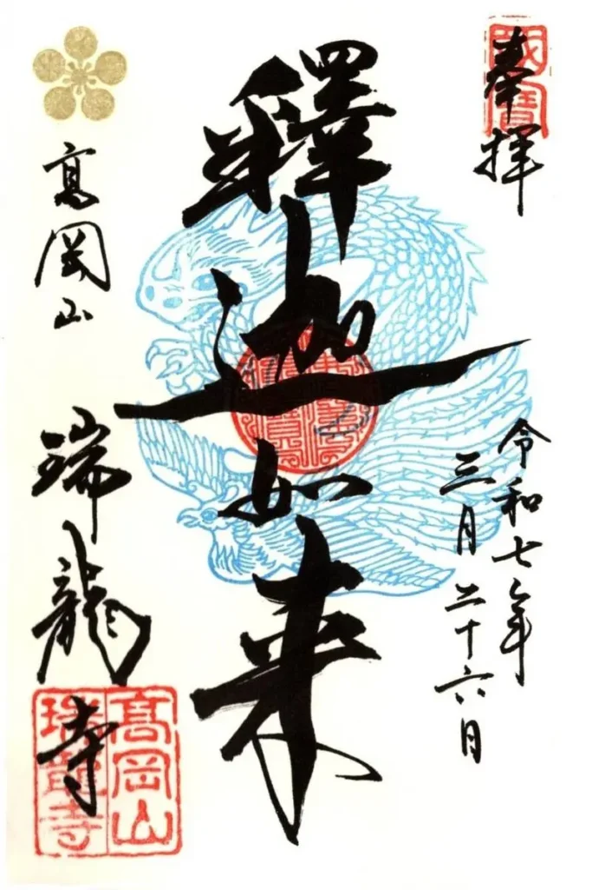
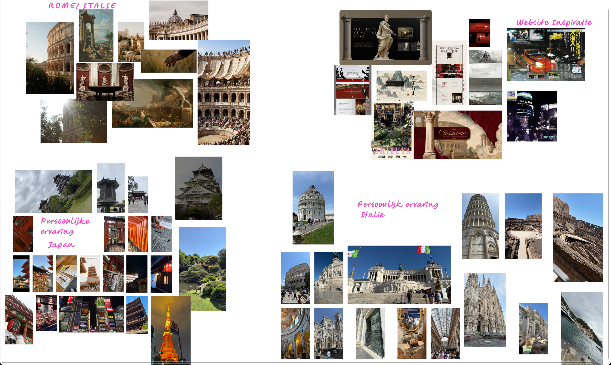
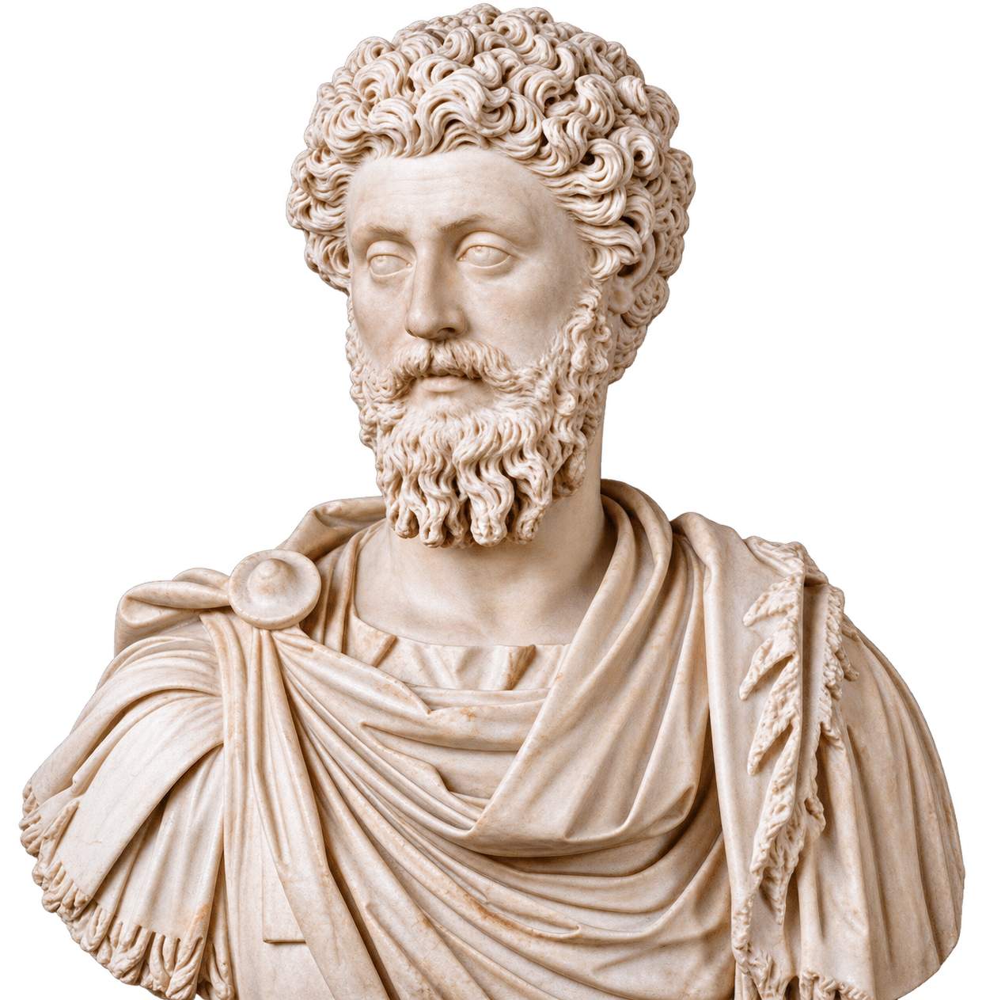

class: center, middle # NIWA BMK ## Mijn Digital Garden **Rome × Japan × Mijn verhaal** --- ### Mijn interesse **Rome en Japan** spreken mij aan. Ik ben zelf in **Italië en Japan** geweest en heb daar veel dingen gezien die mij zijn bijgebleven. In Rome werd ik vooral geïnspireerd door de **oude architectuur en geschiedenis**. In Japan vond ik juist de **tempels, tradities, details en rust** bijzonder. Deze ervaringen neem ik mee in mijn **Digital Garden**. Daarom komen Rome en Japan samen in mijn eigen digitale wereld. --- ### Waarom Rome en Japan? Op het eerste gezicht lijken Rome en Japan heel verschillend. Toch vind ik dat ze meer met elkaar gemeen hebben dan je zou denken. Beide hebben een rijke geschiedenis en veel aandacht voor architectuur, symboliek, tradities en details. Ook vind ik het vakmanschap in beide culturen interessant. Deze dingen inspireren mij bij het maken van mijn Digital Garden. --- ### Het idee achter NIWA BK Mijn Digital Garden gaat **NIWA BK** heten. **Niwa** betekent "tuin" in het Japans. Ik wil mijn website zien als een digitale tuin die steeds verder groeit. Het **Colosseum in Rome** wordt het middelpunt van mijn digitale wereld. Vanuit het Colosseum kan de bezoeker verschillende poorten openen. <p></p> --- ### Japan & mijn goshuinboekje Tijdens mijn reis door Japan heb ik mijn eigen goshuinboekje verzameld. In dit boekje staan speciale stempels van tempels en heiligdommen die ik heb bezocht. Ik vind het mooi dat elke stempel een herinnering aan een plek en een moment is. Daarom wil ik dit idee meenemen in mijn Digital Garden. Bij elke wereld die je ontdekt, kun je een digitale stempel verdienen. Zo bouw je tijdens je bezoek aan mijn garden je eigen verzameling op. <p></p> --- ### Mijn 10 links Voor mijn onderzoek gebruik ik 10 links. 1.https://colosseo.it/en/area/the-colosseum/ 2.https://rollingrome.com/famous-architecture-in-rome/ 3.https://www.japan.travel/en/things-to-do/culture/ 4.https://www.japan.travel/en/things-to-do/history/temples-and-shrines/ 5.https://www.japan.travel/en/responsible-travel-guide/connecting-with-japanese-culture 6.https://travel.edokagura.com/post/what-are-goshuin-and-goshuincho-a-complete-guide-to-goshuincho 7.https://www.gotokyo.org/en/story/guide/japanese-crafts/ 8.https://www.japan.travel/en/sustainable/discover-japanese-craftsmanship/ 9.https://www.japan.travel/en/local-specialities/local-crafts/ 10.https://connect.mayoclinic.org/blog/living-with-mild-cognitive-impairment-mci/newsfeed-post/the-japanese-art-form-of-kintsugi-embracing-the-imperfections-of-life/ --- ### Wat haal ik uit mijn links? De links helpen mij om meer te leren over Rome en Japan. Ik kijk bijvoorbeeld naar de geschiedenis van het Colosseum, Romeinse architectuur, Japanse tempels, Goshuin en Japanse ambachten. De dingen die ik interessant vind, gebruik ik als inspiratie voor mijn eigen Digital Garden. --- ### Mijn 50 afbeeldingen <p></p> --- # Wat herken ik in mijn afbeeldingen? Wanneer ik naar mijn verzameling kijk, zie ik verschillende patronen. **Materialen** Veel steen, hout, metaal en papier. **Vormen** Bogen, poorten, cirkels en symmetrie. **Details** Patronen en versieringen komen vaak terug in gebouwen en objecten. **Natuur** Vooral in Japan zie ik veel natuur terug. **Geschiedenis** Je ziet oude gebouwen, tempels en traditionele details die nog steeds belangrijk zijn. --- # Waarom passen poorten bij mijn idee? De **poort** is voor mij een belangrijk symbool. Een poort betekent dat je van de ene wereld naar een andere wereld gaat. Dat past goed bij mijn Digital Garden. De bezoeker ziet het Colosseum. Daarna kiest hij zelf een poort. Achter iedere poort ontdekt hij een ander deel van mij. --- # Wat wil ik een ander vertellen? Ik wil laten zien **wie ik ben door wat ik interessant vind**. Mijn Digital Garden laat mijn ontwikkeling zien als persoon met mijn interesses. De website hoeft nooit helemaal af te zijn. Net als een echte tuin kan hij blijven groeien. --- # Introtekst **“The soul becomes dyed with the colour of its thoughts.”** — Marcus Aurelius <p></p>